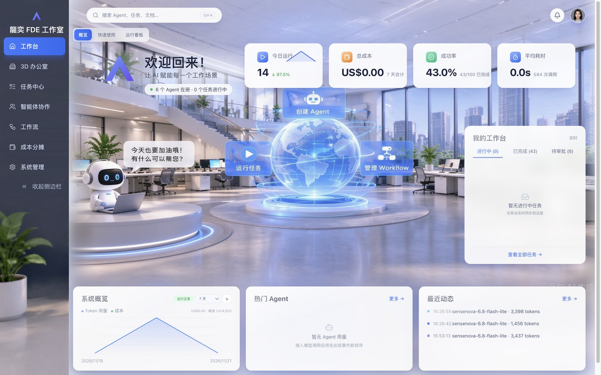

AI 原生运行底座 · 渠道合作
一套底座
装上就是一个新产品
面向软件公司的 AI 原生运行底座。
你们负责找客户、装平台、加行业 Agent，我们把底座能力全部打包好 ——
多租户、身份权限、工作流、工具安全、可观测、配额，开箱即用。
底层能力迁移能力扩展能力渠道模式
公式很简单：平台 + 行业 Agent = 客户要的解决方案
装上底座 + 加个「AI 调酒 Agent」 = AI 调酒师产品 | + 加个「AI 客服 Agent」 = AI 客服产品 | + 加个「AI 律师 Agent」 = AI 法律助手
商业模式
你们交付解决方案，我们提供底座
客户不为「AI」付费，客户为「能解决我问题的产品」付费。你们最懂行业客户，我们把平台底座打包好，你们装上、加个行业 Agent、贴自己的品牌，就是一个可交付的新产品线。
我们提供
- AI 原生底座：Agent 运行、工具安全、多租户、审计、配额
- 技术支持：部署文档、SDK、迁移工具、灰度方案
- 底座升级：持续更新，安全补丁、新功能
你们负责
- 找客户：你们的行业客户资源与关系
- 装平台：私有部署 / 专有云 / SaaS 多种形态
- 加 Agent：基于底座开发行业专属 Agent
- 做交付：上线、培训、运维、续费
客户得到
- AI 原生产品：贴你们的品牌、解决具体问题
- 企业级就绪：权限、审计、隔离、可观测
- 可扩展：后续加新 Agent、接新系统
你们卖解决方案的钱，我们收底座授权费 —— 你们不必从零造轮子，我们不必懂每个行业
为什么现在
企业要 AI 落地，软件公司缺底座
90% 的企业启动了 AI 转型，只有 10% 真正规模化。他们缺的不是模型，是能跑生产、可审计、可扩展的运行底座。软件公司有客户、有行业 know-how，但自研底座成本高、周期长、运维重 —— 这正是现成底座的机会。
企业侧痛点
- 想要 AI 产品，但没能力自研底座（多租户、权限、审计、工具安全）
- 买了模型 API，跑不到生产：没审批、没监控、没配额、出事没日志
- 怕数据泄露、怕成本失控、怕上线后没人运维
软件公司侧痛点
- 有客户、懂行业，但自研 AI 底座要 6–12 人月，还要持续维护
- 底座不是差异化，行业 Agent 才是，但没底座 Agent 跑不起来
- 需要多租户、可私有部署、可灰度的底座，不是 demo 框架
产品公式
一套底座，装上就是 N 个产品
底座是通用的，行业 Agent 是差异化的。你们不必每个客户从零开发，只要在底座上加一个行业 Agent，就是一个新产品。底座负责「跑得起来、安全、可运维」，Agent 负责「懂这个行业」。
🍸
AI 调酒师
调酒 Agent
酒水知识库 + 推荐
🎧
AI 客服
客服 Agent
工单 + 话术 + 派单
⚖️
AI 法律助手
法律 Agent
合同 + 检索 + 起草
📊
AI 数据分析师
分析 Agent
报表 + 异常解释
AI 原生底座 ＋ 行业 Agent ＝ 客户要的解决方案
底座一次开发 · Agent 按行业复制 —— 边际成本递减，交付速度递增
底座不绑定行业
多租户、权限、工具安全、可观测、配额——这些和行业无关，任何 AI 产品都需要，我们做好，你们直接用。
Agent 才是你们的护城河
调酒、客服、法律、财务……行业 know-how 在 Agent 里，属于你们。底座是通用引擎，Agent 是差异化产品。
底层能力 · 总览
12+ 能力域，开箱即用
这不是一个 demo 框架，是一套跑在生产、经过治理的 AI 原生运行底座。代码层已实现的能力域如下，每个都不是 PPT 概念，而是可运行、可测试的模块。
多租户与身份
租户隔离、RBAC、服务账号、资源范围、会话资产
Agent 运行时
Harness 适配层、上下文、工具执行、结构化输出
工作流编排
LangGraph 状态化流程、分支、人工介入、暂停恢复
共享认知黑板
Hybrid Blackboard：提案 / 证据 / 冲突 / 裁决
工具安全网关
MCP 网关、白名单、风险分级、审批绑定
知识库与检索
RAG、向量检索、切片、ACL、集合生命周期
记忆与上下文
版本化记忆、冲突消解、删除传播、作用域边界
配额与成本
Token 预算、并发准入、成本分摊、预留租约
可观测
Langfuse 自托管、Trace、工具调用、成本追踪
事件与可靠性
Outbox、Redis Streams、重试、死信、幂等回执
扩展机制
Extension 包、生命周期、信任发布者、依赖图
底层能力 · 架构分层
清晰的分层，可私有部署
从入口到存储逐层隔离职责，禁止 Agent 直接访问数据库、Redis 或任意网络。支持私有部署、专有云、SaaS 多形态。
入口层Web 控制台 / Public API v1 / SDK → 身份认证、租户解析、RBAC、幂等、审计入口
控制面Agent / Tool / Skill 注册 · 模型模板与策略 · 项目 / 任务 / Run / 审批 · 配额与成本
编排层Orchestrator（LangGraph） → Agent Runtime（Harness 适配层）→ 专家 Agent 执行
共享认知Hybrid Blackboard：事实 / 观点 / 证据 / 关系 / 版本 / 裁决，事件负责唤醒
工具网关Supervised Tool Gateway：MCP 白名单、风险分级、一次性审批、写前/结果审计
存储层PostgreSQL + pgvector（事实源）· Redis Streams（事件层，非事实源）
可观测Langfuse（自托管）：Trace、Generation、工具调用、成本；不记录明文密钥
架构决策已冻结（智能体平台改造总设计 v1.1）；平台领域契约仅依赖 Python 标准库，可脱离 PostgreSQL / Redis / LLM 单测
底层能力 · 01 多租户
多租户与身份权限，卖给谁都是隔离的
软件公司要卖给多个客户，最怕数据串。底座内建企业级身份与租户隔离，每个客户一个租户，数据、知识库、配额、审计全隔离。
租户模型
- 租户 / 成员 / 组织 / 项目边界清晰，资源按项目范围隔离
- 身份解析来自可信控制面，绝不信任请求头/参数里的 tenant_id
- 支持服务账号与凭证版本管理、撤销与恢复
权限与审计
- RBAC + 资源范围授权器，执行前校验当前租户/角色可访问性
- 追加写审计（append-only），操作可追溯、不可篡改
- 主体删除台账，满足数据合规与被遗忘权
会话与资产
- 会话 / 对话上下文 / Run 快照分离，各管各的生命周期
- 文件资产版本化、处理作业可观测
对渠道的意义
- 一个部署服务多个客户，成本摊薄
- 客户数据物理/逻辑隔离，合规好过审
- 权限、审计现成，不用自己造企业级安全
能力来源：agent_platform/identity（租户、RBAC、服务账号、资源范围、安全）、storage/postgres 005/007/040 等迁移
底层能力 · 02 Agent 运行时
Agent 运行时 + 多专家协作黑板
单 Agent 处理简单任务，多专家协作处理复杂任务。底座两者都支持，行业 Agent 可以是单个，也可以是一支协作团队。
Agent Runtime（Harness 适配层）
- 通过适配层接入可替换的执行引擎，不自研模型执行循环
- 已建 DeepSeek Harness 与 Strands Agents 适配器入口
- 同任务基准测试：统一比较通过率、延迟、Token、失败类型
- 结构化输出校验、上下文压缩、运行恢复、取消/超时
Hybrid Blackboard（多专家协作）
- 每条写入有类型、作用域、来源、版本，不是聊天记录
- 对象：Entry / Evidence / Claim / Challenge / Conflict / Decision
- Agent 只能提交提案，不得覆盖他人条目，乐观并发控制
- 裁决记录不可变，撤销/修正产生新裁决，全程留痕
工作流编排（LangGraph）
- 只用于显式流程：状态持久化、分支、人工介入
- 多专家并行汇聚、证据冲突解决、审批中断与恢复
对渠道的意义
- 行业 Agent 可大可小：单 Agent 起步，复杂场景再加专家
- 协作过程可审计，企业客户最看重的可解释性
- 执行引擎可替换，不被单一模型/框架锁死
底层能力 · 03 工具安全
工具安全网关 + 监督式自主
企业客户最怕 AI 乱动生产系统、乱发消息、乱花钱。底座的工具网关让每个副作用都可控、可审批、可审计——这是 demo 框架和生产的分水岭。
风险分级 L0–L3
- L0 只读分析：自动执行
- L1 内部可逆写入：自动执行并留痕
- L2 对外/不可逆（发消息、改数据）：须人工审批
- L3 资金/签约/权限：由人直接执行，Agent 只准备
Gateway-only MCP
- 按 Run 创建 MCP Server，只暴露可信白名单工具
- 短期 Bearer Token 绑定 actor / 资源 URL / 过期 / 撤销
- MCP Server 不直连业务系统，全部回到工具网关
审批绑定与幂等
- L2 审批 ID 按动作 SHA-256 摘要绑定，参数变化即失效
- 风险级别来自服务端可信注册表，模型不能自声明
- 工具副作用幂等键 + 对账（tool_effect），防重复执行
对渠道的意义
- 企业安全评审好过：审批、审计、白名单现成
- 不会因为 AI 误操作赔客户损失
- 发消息、改数据、付款都可控可撤
底层能力 · 04 运营治理
配额成本、事件可靠性与可观测
跑生产最怕成本失控、消息丢失、出事没日志。底座把这三件事都做成了能力，不是后补的脚本。
配额与成本
- Token 预算、上下文窗口预算分账
- 并发准入与队列 worker 并发配额
- 预留租约、成本分摊、Run 预算血缘
- 模型定价目录，成本可算清
事件可靠性
- PostgreSQL Outbox 为事件事实源
- Redis Streams 承载唤醒，消费组 + Pending 恢复
- 指数退避（2s 起、封顶 300s），默认 5 次进死信
- 消费幂等回执去重，不重复执行副作用
可观测
- Langfuse 自托管，可关闭/替换
- Trace、Generation、工具调用全记录
- 成本与错误统计，Alert 事件 + 投递 Outbox
- 不记录明文密钥
对客户
成本看得见、控得住，不会月底账单爆炸；出问题有日志可查，不是黑盒。
对你们
不用自己写监控、对账、限流——底座自带，省下大量运维开发。
对企业
审计、告警、SLA 有据可依，能过安全与合规评审。
能力来源：agent_platform/quotas、events、observability、resilience；storage/postgres 配额/事件/审计相关迁移
扩展能力 · 核心
Extension 机制：行业 Agent 插上就跑
这是「平台 + 行业 Agent = 新产品」的技术保障。行业 Agent、工具、知识库打包成 Extension，声明式接入底座，不改底座代码，安全沙箱内运行。
声明式 Manifest
- extension_id + 语义化版本（x.y.z），平台 API 兼容校验
- 声明所需权限（permissions）、依赖（精确版本锁定）
- 声明入口点，执行仍留在平台网关内，不越权
- 禁止自依赖、权限去重、依赖 ID 合法性校验
生命周期与安全
- Extension 生命周期管理器：安装、启用、停用、升级
- 依赖图解析，避免循环与冲突
- 信任发布者密钥注册表：只有可信来源可发布
- OCI 运行时隔离，扩展在沙箱内执行
Connector 连接器
- Connector Catalog：预置系统连接器目录
- 连接器同步作业、清理作业、worker 并发配额
- 知识库连接器同步、增量更新
对渠道的意义
- 行业 Agent 做成 Extension，一个包复制到多个客户
- 不改底座，升级底座不影响你们的行业包
- 权限、依赖、兼容性底座帮你管，不会装出问题
- OCI 沙箱隔离，客户安全评审好过
能力来源：agent_platform/extensions（manifest、manager、lifecycle、dependency_graph、publishers、oci_runtime）、connectors
迁移能力 · 01 系统迁移
迁移能力（一）：把现有系统平滑迁上来
企业已有业务在旧系统上，最怕「推倒重写」。底座用 expand/contract 渐进迁移 + 租户灰度切换，新旧并行、可暂停可回滚，不中断业务。
Expand / Contract 迁移编排
- 八个阶段状态机：planned → expanded → dual_write → backfill → validated → cutover → contracted
- 每阶段幂等、可暂停、可回滚（rolled_back / failed）
- SchemaCompatibility 版本区间：reader/writer 兼容范围显式声明
- 迁移状态显式化，不靠"跑没跑成功"猜测
租户灰度切换（Cutover）
- TenantCutoverPolicy：按租户 allowlist + 流量百分比灰度
- 基于 HMAC + salt 确定性路由，同一租户稳定命中
- 租户标识由认证后的解析器提供，不信任请求头
- API 与 Workflow 入口共用同一份路由策略
存量数据迁移
- 数据迁移批次管理与staging 中转表（022 / 049 迁移）
- 遗留身份审计、迁移、撤销工具（legacy_audit / legacy_migration）
- Run 上下文快照、旧列 drop 的有序演进
对渠道的意义
- 客户不用停机换系统，边跑边迁
- 按租户灰度，出问题只影响灰度范围，可秒回滚
- 旧数据、旧账号有工具搬，不是手工导
能力来源：agent_platform/deployment（migrations、backups）、switching（tenant cutover gateway）、identity/legacy_*、storage/postgres 022/049 等
迁移能力 · 02 部署与备份
迁移能力（二）：可搬、可备份、可恢复
软件公司要把底座装到不同客户的不同环境，最怕「装一次调一周」。底座强调可迁移、可备份、可恢复演练，让交付可复制。
备份与恢复
- Provider-neutral 备份策略：全量 + 增量（full / incremental）
- 快照链与异地复制（off-site replication）
- 恢复演练状态机：planned → running → verified / failed
- 保留期与恢复目标（RPO/RTO）显式为时长
多种部署形态
- 私有部署：装在客户自己的服务器 / 内网
- 专有云：装在客户专属云环境
- SaaS 多租户：一套部署服务多客户
- 数据生命周期治理（064 / 066 / 071 迁移）
配置与密钥
- Secret 版本化、密文存储、撤销恢复（021/035/058/065）
- 模型模板唯一入口，密钥只从环境/Secret 注入，不入库不明文
对渠道的意义
- 不同客户环境都能装，形态随客户选
- 备份恢复现成，交付即带灾备能力
- 交付可复制：装底座 → 配租户 → 装 Extension → 上线
能力来源：agent_platform/deployment（backups、versioned）、configuration、models（模板）、storage/postgres 备份/密钥/生命周期迁移
迁移能力 · 03 交付路径
一个新客户的交付路径
软件公司拿到一个新客户，从签约到上线，标准路径是可复制的。底座把每一步需要的工具都准备好了。
1装底座
选部署形态
私有/专有云/SaaS
初始化数据库
→
2建租户
为客户建租户
配成员与 RBAC
数据隔离就绪
→
3接数据
Connector 接客户系统
知识库导入
必要时灰度迁移旧系统
→
4装 Extension
装行业 Agent 包
声明权限/依赖
沙箱隔离运行
→
5配审批
按 L0-L3 配风险
高风险动作绑审批
配额与成本上限
→
6评测上线
建评测集回归
接可观测
上线 + 培训 + 运维
每步都有工具
装底座有初始化、建租户有身份模块、接数据有 Connector、装 Extension 有生命周期、审批有网关、上线有评测和可观测。
可灰度可回滚
旧系统按租户灰度切，出问题只影响灰度范围；迁移分阶段，每阶段可暂停回滚。
交付可复制
下一个客户重复这条路径，越做越快。行业 Extension 包一次开发，多客户复用。
技术成熟度
这不是概念，是跑起来的代码
底座的成熟度不看 PPT，看仓库。以下都是代码层已实现、有测试覆盖的能力，不是规划中的想法。
103+
PostgreSQL 迁移脚本
数据模型持续演进
依赖隔离
领域契约只依赖标准库，可脱离 PostgreSQL / Redis / LLM 跑单测；平台依赖单独安装，缺组件给明确错误而非导入崩溃。
渐进式演进
不推倒重写，通过 Adapter 逐步替换运行底座；新旧并行期明确每类数据的唯一写入方，禁止双主写。
可测试
每个能力域有独立验收标准与集成测试：多专家协作、事件幂等、审批拦截、灰度路由、备份恢复。
说明：上述为代码仓库现状盘点（agent_platform 模块与 storage/postgres 迁移）；功能完整度与生产就绪项以逐模块验收为准
实际界面
运行中的底座控制台（真实截图）
装好的底座，客户看到的是这样一个可操作的控制台：Agent 在册、任务运行、成本、成功率、系统概览一目了然。你们可贴自己的品牌、按客户行业定制界面。

底座控制台概览（真实运行界面）：左侧主导航（工作台 / 3D 办公室 / 任务中心 / 智能体协作 / 工作流 / 成本分摊 / 系统管理）；顶部为今日运行、总成本、成功率、平均耗时等实时指标；中央为系统概览趋势与最近动态。界面采用 3D 概念视觉背景。
下一步
一起把它卖出去
你们有客户和行业 know-how，我们有跑得起来的 AI 原生底座。
装上就是新产品，交付可复制，企业级就绪 —— 老板，这笔账划算吗？
为什么是现在
企业 AI 落地需求爆发，缺的是可跑生产的底座。自研要 6–12 人月，买现成的省时间、省成本、快交付。
为什么是我们
底座已在跑：多租户、工具安全、配额、可观测、扩展、迁移，12+ 能力域，不是 demo，是生产级。
怎么开始
选一个你最有把握的行业场景 → 我们一起把行业 Agent 做成 Extension → 第一个客户跑通，再复制。
一句话总结
一套可私有部署、多租户、工具安全、可灰度迁移的 AI 原生底座。
你们加行业 Agent、找客户、做交付；我们提供底座、升级和技术支持。
平台 + 行业 Agent = 客户要的解决方案 —— 这门生意，能不能做？
底层能力迁移能力扩展能力渠道共赢